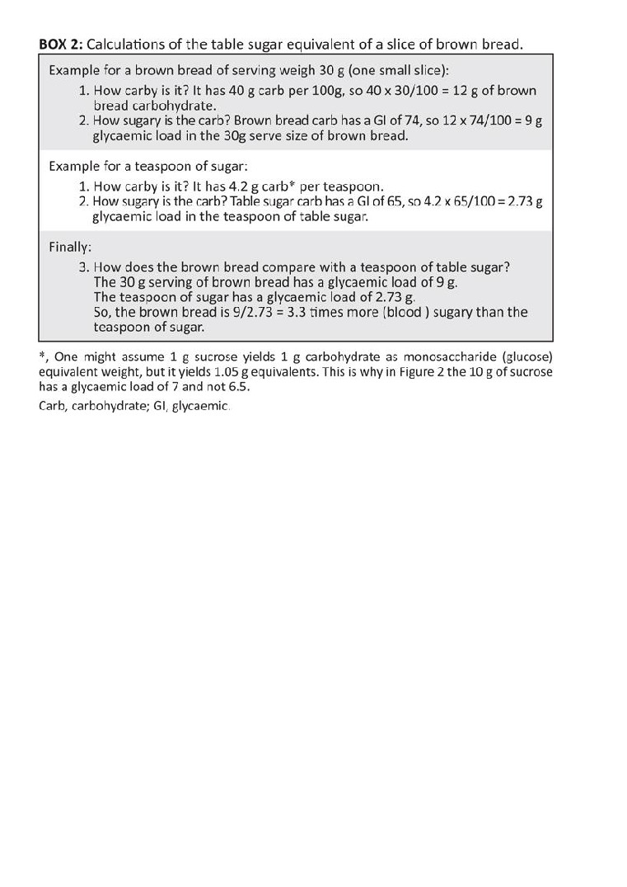

The Glycaemic Index (GI) Glycaemic Load (GL) and Unwin sugar infographics explained.
Dr DJ Unwin FRCGP
Dietary carbohydrates are the main drivers of blood sugar and so are problematic for
people with T2 Diabetes. But various dietary carbs affect blood glucose differently. An
understanding of both the glycaemic index (GI) of the different carbohydrates in our foods
and the glycaemic load (GL) that specific portions of those foods generate is key for making
better dietary choices to improve blood glucose control
It is confusing that the various specific carbohydrates to be found in foods vary considerably
in their ability to raise our blood glucose. To help us predict the glycaemic consequences of
our dietary choices the glycaemic index ranks carbohydrates against pure glucose which
counts at ‘100’ on the index. The carbohydrate in watermelon for example is more ‘sugary’
gram for gram than an equivalent weight of the carbohydrate to be found in a banana.
But the confusion does not end there. It’s also important to factor in the density of
carbohydrate in each food. In this case the banana has a far greater density of banana
carbohydrate than the watermelon has of watermelon carbohydrate, as the latter is mainly
water. So that if the same portion size of each fruit is consumed the banana has treble the
effect on blood glucose than watermelon, despite banana having a lower glycaemic index.
To sort this out we have to go to the next step- the glycaemic load; itself derived from the
glycaemic index. The glycaemic load reflects the equivalent gram weight of glucose for a
given portion of food and is a better measure than the glycaemic index for people
interested in how any particular food may affect their blood glucose. In this case a ripe
banana is equivalent to 16g or four teaspoons of pure glucose whereas the watermelon
despite its greater GI is only equivalent to 5g of pure glucose, just over a teaspoon.
Using the glycaemic index, and its derived glycaemic load to compare two 120g portions
of banana and watermelon.
Fruit
Glycaemic index GI
Serving in gms
Glycaemic load GL
Banana
62
120
16
Watermelon
80
120
5
Glycaemic load
GL was introduced via epidemiological work that positively related the incidence of T2D to
post-prandial increments in blood glucose from foods(1, 2). In assessing the effect of a
particular food on blood glucose, there are two important questions:
1. What is the density of carbohydrate in the food?
2. How does the particular carbohydrate in a typical portion of that food affect post-
prandial blood glucose?
In talking with health professionals and patients, we re-interpreted these 2 questions about
the food. It seemed to help communication, to ask:
1. How carby is it? (Q1)
2. How sugary is that particular carb? (Q2) This relates to the glycaemic index (GI)
where the carbohydrate is compared to pure glucose in terms of its effect on blood
glucose- which in terms of the index counts as 100
In this way, for a given portion of food we can now predict how many grams of glucose
taken orally would affect the blood glucose to the same extent as the portion of actual food
in question? (Note that the two questions investigate the total available (digestible)
carbohydrate content of a serving or portion of food.)
In clinical practice it became clear that neither patients nor most health care professionals
understood the glycaemic index or its derived glycaemic load. Upon investigation we found
in part this was due to the fact that most people are unfamiliar both with glucose and with
grams as a measure of weight. So, few people really understand say 16g of glucose. I took
expert advice from Dr Geoffrey Livesey (one of the original researchers into the glycaemic
index(3)) who agreed the validity of re-interpretating the glycaemic load of specific portions
of food in terms of the far more familiar 4g teaspoon of table sugar. We then co-authored
the resulting paper(4) which launched the ‘teaspoon of sugar’ infographics in 2016.
In Box 2 we show the calculations (published in that paper) for brown bread, initially using
the conventional sugar, glucose as the reference standard, this gives the ‘glycaemic load
per serving’ (with units of gms of glucose/serving).
In this case, the GL generated by 30 g of brown bread is shown to be equivalent to 9 g of
pure glucose, important information, especially for someone with diabetes. This figure is
then divided by the equivalent value of a 4g teaspoon of table sugar.(sucrose) to produce
the teaspoon of table sugar equivalent (in this case 3.3 teaspoons). Arguably much easier
for people to understand. These are the calculations which have led to my series of patient-
friendly infographics to help in dietary choices for people with Type 2 Diabetes.
The epidemiological work on incident T2D initiated by Salmeron et al.(2) has been
expanded to 24 studies worldwide, for which meta-analyses reveal a strong dose-response
T2D-GL relation(3) implying with support of interventional studies(5) that diets lower in GL
can be preventative of T2D.

Refs.
1.
Salmerón J, Manson JE, Stampfer MJ, Colditz GA, Wing AL, Willett WC. Dietary Fiber, Glycemic
Load, and Risk of Non—insulin-dependent Diabetes Mellitus in Women. JAMA. 1997;277(6):472-7.
2.
Salmerón J, Ascherio A, Rimm EB, Colditz GA, Spiegelman D, Jenkins DJ, et al. Dietary Fiber,
Glycemic Load, and Risk of NIDDM in Men. Diabetes Care. 1997;20(4):545-50.
3.
Livesey G, Taylor R, Livesey H, Liu S. Is there a dose-response relation of dietary glycemic load to
risk of type 2 diabetes? Meta-analysis of prospective cohort studies. The American Journal of Clinical
Nutrition. 2013;97(3):584-96.
4.
David Unwin DH, Geoffrey Livesey,. It is the glycaemic response to, not the carbohydrate content
of food that maters in diabetes and obesity: The glycaemic index revisited. Journal of Insulin Resistance.
2016;2016;1(1), a8.(https://insulinresistance.org/index.php/jir/article/view/8/11).
5.
Augustin LSA, Kendall CWC, Jenkins DJA, Willett WC, Astrup A, Barclay AW, et al. Glycemic index,
glycemic load and glycemic response: An International Scientific Consensus Summit from the
International Carbohydrate Quality Consortium (ICQC). Nutrition, Metabolism and Cardiovascular Diseases. 2015;25(9):795-815.